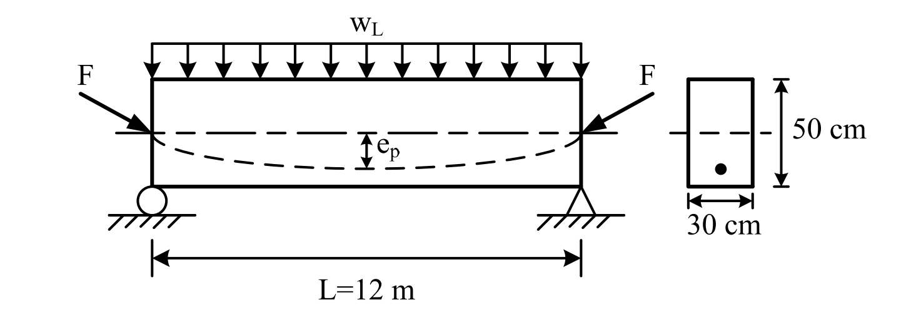
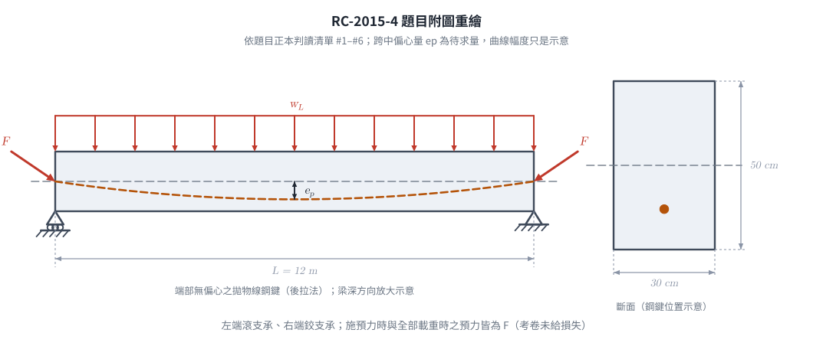

📄 題目正本：考卷原文・附圖・判讀清單（已確認）
RC-2015-4 題目正本
本檔只記錄考卷上寫了什麼、圖上畫了什麼，不含任何解法。解析見同資料夾
RC-2015-4.md。
判讀清單已經確認（凍結）；本檔原則上不再修改（改動須回考卷原圖並記 log）。
| 項目 | 內容 |
|---|---|
| 考卷 | raw/exams/RC-2015_鋼筋混凝土設計與預力.pdf 第 2 頁（背面），第四題 |
| 考年 | 民國 104 年（2015） |
| 配分 | 20 分 |
| 附圖 | RC-2015-4-fig-1.png（簡支梁立面＋斷面） |
| 判讀狀態 | 已確認（2026-11-15 使用者授權依 Claude 建議確認；轉錄 2026-11-15；PyMuPDF 110 dpi 全頁＋附圖向量圖目視、文字層逐字核對；盲讀後才比對既有解析） |
1. 考卷原文（逐字）
四、下圖所示為採後拉法之預力混凝土簡支矩形梁，梁斷面 b=30cm，h=50cm，材料強度 f'c=350 kgf/cm²，梁跨度 L=12m，鋼鍵為端部無偏心之拋物線配置，若適當設計施加之預力 F 值及梁中央斷面之鋼鍵偏心量 $e_p$ 值，則此預力簡支梁可承受最大之均佈活載重 $w_{L\max}$，假設在施預力時及全部載重作用時，混凝土之容許壓應力均為 $f_{ca}$=140 kgf/cm²，容許拉應力均為 $f_{ta}$=0 kgf/cm²，請分析此 F 值、$e_p$ 值及 $w_{L\max}$ 值。（20 分）
2. 考卷給的公式、附表與參數
- 後拉法簡支矩形梁：$b=30$、$h=50$ cm；$L=12$ m；$f'_c=350$ kgf/cm²。
- 鋼鍵：拋物線，端部無偏心；跨中偏心 $e_p$ 待求；預力 $F$ 待求。
- 容許應力（兩階段相同）：壓 $f_{ca}=140$、拉 $f_{ta}=0$ kgf/cm²。
- 所求：$F$、$e_p$、$w_{L\max}$。
- 沒有給：混凝土單位重、預力損失（題文與附圖只有一個 $F$）、$f'_{ci}$、鋼鍵保護層或最大可行偏心。
- 卷首注意事項：可以使用電子計算器。不必抄題，作答時請將試題題號及答案依照順序寫在試卷上，於本試題上作答者，不予計分。（本卷未指定規範版本。）
3. 附圖

圖面文字照錄：w_L、F（兩端）、e_p、50 cm、30 cm、L=12 m。
4. 判讀清單
| # | 項目 | 判讀 | 圖上／題文依據 | 把握 |
|---|---|---|---|---|
| 1 | 兩階段預力 | 施預力時與全部載重作用時皆用同一個 $F$（考卷未給損失比） | 題文「施加之預力 F」；附圖兩端只標 F | 確定（解讀；2026-11-15 使用者授權依 Claude 建議確認） |
| 2 | 自重 | 施預力時有自重彎矩，全部載重＝自重＋$w_L$；單位重考卷沒有給，須明列假設（常用 2.4 tf/m³） | 題文「全部載重」 | 確定（解讀） |
| 3 | 容許應力 | 140（$=0.4f'_c$）與 0 比現行規範嚴，視為題目設計條件照用（依本庫容許值例外規則） | 題文 | 確定 |
| 4 | 支承 | 左端滾支承（圓圈）、右端鉸支承（三角形）；簡支 | 附圖 | 確定 |
| 5 | 鋼鍵線形 | 端部偏心 0（F 作用於形心高度），拋物線下垂，跨中偏心 $e_p$（形心以下） | 題文「端部無偏心之拋物線」；附圖虛線 | 確定 |
| 6 | 載重 | $w_L$ 全跨均佈 | 附圖箭頭布滿全跨 | 確定 |
| 7 | 考卷沒有給 | 單位重、損失、$f'_{ci}$、保護層 | 全題 | 確定（作答須明列假設；$e_p$ 結果須自行檢查幾何可行） |
轉錄：2026-11-15（RC-U4-2+U4-3+U4-4 題目正本推廣・批 1）
確認：2026-11-15 使用者授權依 Claude 建議確認（RC-U4-2+U4-3+U4-4 題目正本推廣・批 1，關卡一）
考題編號：RC-2015-4
主分類： RC-U4-2 預力量與偏心量設計
副分類： RC-U4-1 預力梁斷面應力分析
設計法： WSD工作應力法
標籤： 後拉法 拋物線腱 端部無偏心 四控制條件 容許應力設計 最大活載重 簡支預力梁 核心距
1. 題目（考卷原文見題目正本）
考卷原文、公式／附表、附圖與判讀清單（已確認）見
RC-2015-4-problem.md。本節只列解題時最容易讀錯的地方與本解使用的記號；題意以題目正本為準。

重繪自考卷附圖，依題目正本判讀清單 #1、#4–#6。本圖攔下的讀錯：端部當成有偏心；施預力與使用階段的預力分成兩個值（考卷只有一個 F）。
常見誤讀
| 項目 | 正確判讀 | 常見誤讀 |
|---|---|---|
| 預力 | 施預力時與全部載重時同一個 $F$（考卷未給損失） | 使用階段另乘損失比 |
| 容許應力 | 壓 140、拉 0 kgf/cm²，兩階段相同，比現行規範嚴，照用 | 改用規範值 |
| 自重 | 施預力時已有自重彎矩；單位重考卷沒有給（明列 2.4 tf/m³ 假設） | 忽略自重或當題目已知 |
| 支承 | 左滾右鉸，簡支 | — |
本解記號： $b$＝30、$h$＝50 cm；$L$＝12 m；$F$、$e_p$、$w_{L\max}$ 為所求；$f_{ca}$＝140、$f_{ta}$＝0 kgf/cm²；$e_p$ 由形心向下為正。
2. 考題核心精神與出題者意圖（Core Concepts & Examiner's Intent）
核心觀念： 預力梁在「施預力時」與「服務載重時」各有頂底纖維的應力限制，共四個邊界條件（允許壓應力上限、禁止拉應力）。同時啟動四個邊界條件（頂底各達極限），斷面應力空間被最充分利用，此時可承受之活載重最大、預力量最小。
出題者意圖：
- 測驗容許應力設計的四個邊界條件的建立能力
- 測驗聯立方程組解 F 與 ep 的能力
- 測驗從「最大活載重」反求 ML 再求 wLmax 的思路
3. 解題戰略地圖與陷阱分析（Strategic Roadmap & Trap Analysis）
四個關鍵應力邊界條件（同時啟動 → 最優設計）：
[施預力時（wD 作用）] [全部載重時（wD + wLmax）]
頂部：fta = 0（不拉） 頂部：fca = 140（最大壓）
底部：fca = 140（最大壓） 底部：fta = 0（不拉）
作戰計畫（四步驟）：
Step 1 計算斷面性質（A、S、對稱性）
計算梁自重 wD 與跨中彎矩 MD
↓
Step 2 建立四個應力邊界方程，以「頂底對稱」簡化
→ 三個方程：聯立解 F、ep、ML
↓
Step 3 由 ML 反求 wLmax
↓
Step 4 驗算四個應力條件均滿足
關鍵陷阱（四個）：
| # | 陷阱 | 正確做法 |
|---|---|---|
| ① | 忘記自重 wD | 自重恆在，施預力時已有 MD，不能只考慮 wLmax |
| ② | 只列 2 個條件（設計保守） | 四個條件同時啟動 → 最優（最大 wLmax） |
| ③ | 應力公式符號弄錯 | 壓正拉負；偏心在形心下方 → 底部多壓、頂部少壓 |
| ④ | 跨中與端部混淆 | 端部 e=0（僅 F/A）；跨中 e=ep（F/A ± F·ep/S） |
3.5 變數層次分析（Variable Hierarchy Analysis）
複習提示：第一次解題後，在每個卡住的知識點旁標記
⚠；第二次複習時只看有⚠的項目。
最終目標
找最優預力力量 F、跨中偏心量 ep，使梁可承受最大均佈活載重 wLmax，同時全程不超過容許應力範圍。
本題關鍵公式（依計算順序）
$$\text{Step 1:}\quad A = bh,\ S_t = S_b = \frac{bh^2}{6},\ w_D = \gamma_c bh,\ M_D = \frac{w_D L^2}{8}$$
$$\text{Step 2（施預力時頂）:}\quad \frac{F}{A} - \frac{F\,e_p}{S} + \frac{M_D}{S} = 0$$
$$\text{Step 3（全部載重時底）:}\quad \frac{F}{A} + \frac{F\,e_p}{S} - \frac{M_D + M_L}{S} = 0$$
$$\text{Step 4（兩式相加）:}\quad \frac{2F}{A} = \frac{M_L}{S} \quad\Rightarrow\quad F = \frac{M_L \cdot A}{2S}$$
$$\text{Step 5（由頂部條件）:}\quad \frac{F\,e_p}{S} = f_{ca} - \frac{F}{A} + \frac{M_D}{S} \quad\Rightarrow\quad e_p$$
$$\text{Step 6:}\quad M_L = f_{ca} \cdot S \quad\Rightarrow\quad w_{L,\max} = \frac{8 M_L}{L^2}$$
L1：題目直接給定
| 符號 | 數值 | 說明 |
|---|---|---|
| $b, h$ | 30, 50 cm | 矩形斷面 |
| $L$ | 12 m = 1200 cm | 跨度 |
| $f'_c$ | 350 kgf/cm² | 混凝土設計強度 |
| $f_{ca}$ | 140 kgf/cm² | 全程容許壓應力 |
| $f_{ta}$ | 0 kgf/cm² | 全程容許拉應力（不允許） |
| 腱形 | 端部無偏心，拋物線到跨中 ep | 幾何條件 |
L2：需知識點推導
| 符號 | 公式／來源 | 卡關? |
|---|---|---|
| $A$ | $30 \times 50 = 1{,}500$ cm² | |
| $S_t = S_b$ | $30 \times 50^2/6 = 12{,}500$ cm³ | |
| $w_D$ | $2{,}400 \times 0.30 \times 0.50 = 360$ kgf/m（自重） | |
| $M_D$ | $w_D L^2/8 = 360 \times 144/8 = 648{,}000$ kgf·cm | |
| $M_L$ | 由四條件聯立：$M_L = f_{ca} \times S$ | |
| $F$ | 由聯立：$F = M_L \cdot A/(2S) = f_{ca} \cdot A/2$ | |
| $e_p$ | 由頂部條件：$e_p = (f_{ca}/2 + M_D/S) \times S/F$ | |
| $w_{L,\max}$ | $8M_L/L^2$ |
L3：深層知識（不懂就卡住）
| 知識點 | 說明 | 卡關? |
|---|---|---|
| 四個應力邊界同時啟動 = 最優設計 | 若只啟動 2 個條件，仍有裕度，代表沒用到最大容量；同時啟動 4 個才是最優 | |
| 對稱斷面的簡化 | $S_t = S_b$（矩形對稱），聯立方程中的「加減消去法」特別簡潔 | |
| 端部 e=0 的應力 | 端部只有軸壓 $F/A$，自動滿足 $0 \leq F/A \leq f_{ca}$ | |
| 四條件聯立的物理意義 | 施預力時底部壓力最大（自重使底部「卸荷」），服務載重時頂部壓力最大（活載加壓頂部）；這就是預力梁的「應力翻轉」設計原理 |
4. 步驟化詳細計算過程（Step-by-Step Detailed Calculation）
Step 1：斷面性質與自重
$$A = 30 \times 50 = 1{,}500 \text{ cm}^2$$
$$S_t = S_b = S = \frac{30 \times 50^2}{6} = \frac{75{,}000}{6} = \boxed{12{,}500 \text{ cm}^3} \quad \text{（矩形對稱，頂底相同）}$$
$$w_D = 2{,}400 \times 0.30 \times 0.50 = 360 \text{ kgf/m} = 0.36 \text{ tf/m}$$
$$M_D = \frac{w_D L^2}{8} = \frac{360 \times 12^2}{8} = \frac{360 \times 144}{8} = \boxed{648{,}000 \text{ kgf·cm} = 6.48 \text{ tf·m}}$$
Step 2：建立四個應力邊界方程
規則： 壓應力為正（+），拉應力為負（−）。鋼鍵在形心以下 ep，正彎矩（wD, wL 向下）使頂壓底拉。
設 $a = F/A$（軸壓應力），$b_e = F \cdot e_p/S$（偏心彎矩應力）。
| 條件 | 纖維 | 公式（壓正拉負） | 邊界值 |
|---|---|---|---|
| 施預力時（含 wD） | 頂（拉力邊） | $a - b_e + M_D/S$ | $= f_{ta} = 0$ |
| 施預力時（含 wD） | 底（壓力邊） | $a + b_e - M_D/S$ | $= f_{ca} = 140$ |
| 全部載重時（wD+wL） | 頂（壓力邊） | $a - b_e + (M_D+M_L)/S$ | $= f_{ca} = 140$ |
| 全部載重時（wD+wL） | 底（拉力邊） | $a + b_e - (M_D+M_L)/S$ | $= f_{ta} = 0$ |
Step 3：聯立求解 ML
條件①（施預力頂）：
$$a - b_e + M_D/S = 0 \quad\Rightarrow\quad a - b_e = -M_D/S \qquad \cdots (1)$$
條件④（全部載重底）：
$$a + b_e - (M_D + M_L)/S = 0 \quad\Rightarrow\quad a + b_e = (M_D + M_L)/S \qquad \cdots (4)$$
(1) + (4)：
$$2a = \frac{M_L}{S}$$
條件②（施預力底）：
$$a + b_e - M_D/S = 140 \quad\Rightarrow\quad a + b_e = 140 + M_D/S \qquad \cdots (2)$$
條件③（全部載重頂）：
$$a - b_e + (M_D + M_L)/S = 140 \quad\Rightarrow\quad a - b_e = 140 - (M_D + M_L)/S \qquad \cdots (3)$$
(2) + (3)：
$$2a = 280 - M_L/S$$
由兩個 $2a$ 的表達式相等：
$$\frac{M_L}{S} = 280 - \frac{M_L}{S}$$
$$\frac{2M_L}{S} = 280 \quad\Rightarrow\quad M_L = 140 \times S = 140 \times 12{,}500 = \boxed{1{,}750{,}000 \text{ kgf·cm} = 17.5 \text{ tf·m}}$$
Step 4：求 F（預力）
$$2a = \frac{M_L}{S} = \frac{1{,}750{,}000}{12{,}500} = 140 \text{ kgf/cm}^2$$
$$a = \frac{F}{A} = 70 \text{ kgf/cm}^2$$
$$\boxed{F = 70 \times 1{,}500 = 105{,}000 \text{ kgf} = 105 \text{ tf}}$$
Step 5：求 ep（跨中偏心量）
由條件①：
$$a - b_e = -M_D/S \quad\Rightarrow\quad b_e = a + M_D/S = 70 + \frac{648{,}000}{12{,}500} = 70 + 51.84 = 121.84 \text{ kgf/cm}^2$$
$$b_e = \frac{F \cdot e_p}{S} = 121.84$$
$$e_p = \frac{121.84 \times S}{F} = \frac{121.84 \times 12{,}500}{105{,}000} = \frac{1{,}523{,}000}{105{,}000} = \boxed{14.50 \text{ cm}}$$
Step 6：求 wLmax（最大均佈活載重）
$$M_L = \frac{w_{L,\max} \cdot L^2}{8}$$
$$w_{L,\max} = \frac{8 M_L}{L^2} = \frac{8 \times 1{,}750{,}000 \text{ kgf·cm}}{(1200 \text{ cm})^2} = \frac{14{,}000{,}000}{1{,}440{,}000} = \boxed{9.72 \text{ kgf/cm} = 972 \text{ kgf/m} \approx 0.972 \text{ tf/m}}$$
Step 7：驗算四個應力條件
$a = 70$ kgf/cm²，$b_e = 121.84$ kgf/cm²，$M_D/S = 51.84$ kgf/cm²，$(M_D+M_L)/S = 191.84$ kgf/cm²
| 條件 | 計算式 | 結果 | 限制 | 判斷 |
|---|---|---|---|---|
| 施預力時－頂 | $70 - 121.84 + 51.84$ | $= 0$ | $\geq 0$ | ✅ |
| 施預力時－底 | $70 + 121.84 - 51.84$ | $= 140$ | $\leq 140$ | ✅ |
| 全部載重－頂 | $70 - 121.84 + 191.84$ | $= 140$ | $\leq 140$ | ✅ |
| 全部載重－底 | $70 + 121.84 - 191.84$ | $= 0$ | $\geq 0$ | ✅ |
設計結果彙整
$$\boxed{F = 105 \text{ tf},\quad e_p = 14.50 \text{ cm},\quad w_{L,\max} = 0.972 \text{ tf/m}}$$
5. 關鍵爭議點與進階探討（Critical Issues & Advanced Discussion）
四個條件的物理意義：預力梁的「應力翻轉」
| 時機 | 頂纖維 | 底纖維 | 原因 |
|---|---|---|---|
| 施預力時（僅 wD） | 達零拉（拉力邊界） | 達最大壓 | 偏心預力產生頂拉底壓，自重彎矩（頂壓底拉）部分抵消，最終頂部最危險 |
| 全部載重時 | 達最大壓（壓力邊界） | 達零拉 | 活載重彎矩（頂壓底拉）使頂部趨向壓力飽和，底部趨向零拉 |
這種「施預力時底部最大壓、服務時頂部最大壓」的設計，使斷面的壓應力容量被最充分利用——這是預力梁「彈性核」（core）設計的精髓。
端部應力驗算
端部鋼鍵偏心為 0，端部應力 = $F/A = 70$ kgf/cm²（均勻壓縮），介於 0 至 140 kgf/cm² 之間，自動滿足。
幾何可行性
$e_p = 14.50$ cm，形心在斷面中央（25 cm 處），鋼鍵距底面 = $25 - 14.50 = 10.50$ cm，留有足夠保護層（通常 5∼7 cm），幾何上可行。
修正日期：2026-11-15（§1 改為指向題目正本，插入重繪附圖 figs/RC-2015-4-fig-1-problem.svg；舊 §1 重述改寫為常見誤讀與本解記號；本行非答案勘誤）